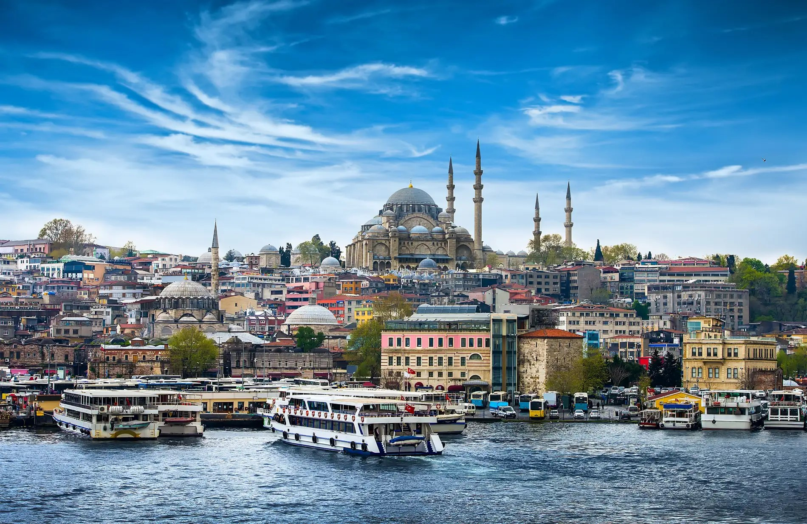

|
||||||||||||||||||||||||||||||
| Anasayfa | İlçeler | Tarihi | Tarihi Yerler | Hakkında | İletişim | |||||||||||||||||||||||||
|---|---|---|---|---|---|---|---|---|---|---|---|---|---|---|---|---|---|---|---|---|---|---|---|---|---|---|---|---|---|---|
Şehri Doya Doya
|
İstanbul'un Tarihi İstanbul, hem tarihi hem de kültürel açıdan dünyanın en etkileyici şehirlerinden biridir. Doğu ile Batı’nın kesiştiği bu eşsiz şehir, Roma, Bizans ve Osmanlı gibi üç büyük imparatorluğa başkentlik yapmış, her biri kendi döneminin izlerini ve mirasını bırakmıştır. Erken Tarih ve Byzantion Dönemiİstanbul’un tarihi, MÖ 7. yüzyıla kadar uzanır. Bu dönemde Yunanistan’dan gelen bir grup yerleşimci, bugünkü Sarayburnu bölgesine yerleşerek şehre "Byzantion" adını vermiştir. Byzantion, deniz ticaretinde stratejik bir konumda olduğu için kısa sürede önemli bir liman kenti haline gelmiştir. Coğrafi konumu sayesinde Batı ve Doğu arasındaki ticaret yollarının kesişim noktasında yer alan Byzantion, hem askeri hem de ticari anlamda çok değerli bir şehir olmuştur. Roma İmparatorluğu ve Konstantinopolis4. yüzyılda, Roma İmparatoru I. Konstantin, şehrin stratejik önemini fark ederek Roma İmparatorluğu’nun başkentini Byzantion’a taşımaya karar vermiştir. 330 yılında şehrin adı "Konstantinopolis" olarak değiştirilmiş ve resmen Roma İmparatorluğu’nun yeni başkenti olmuştur. Konstantinopolis, Roma mimarisinin izlerini taşıyan büyük yapılarla donatılmış; hipodromlar, forumlar ve büyük bir saray inşa edilmiştir. Şehir, Hristiyanlığın da merkezi haline gelmiş ve büyük kiliseler yapılmıştır. En önemlisi Ayasofya olan bu yapılar, şehrin dini ve kültürel merkezi olarak gelişmesini sağlamıştır. Bizans DönemiRoma İmparatorluğu’nun bölünmesinin ardından Doğu Roma İmparatorluğu'nun başkenti olarak kalmaya devam eden Konstantinopolis, Bizans İmparatorluğu’nun simgesi haline gelmiştir. Bu dönemde şehir, bir yandan Persler ve Araplar gibi doğudan gelen tehditlerle mücadele etmiş, diğer yandan ise Batı’da yükselen güçlerle rekabet etmiştir. Bizans döneminde şehir, altın mozaiklerle süslü kiliseler ve saraylarla donatılmış, Bizans sanatı ve mimarisinin eşsiz örnekleri ortaya çıkmıştır. Osmanlı Dönemi1453 yılında, II. Mehmet'in (Fatih Sultan Mehmet) önderliğinde Osmanlı İmparatorluğu, Konstantinopolis’i fethederek bu büyük şehri Osmanlı İmparatorluğu’nun başkenti yapmıştır. Şehir, Osmanlı döneminde "İstanbul" adını alarak hızla gelişmeye başlamıştır. Osmanlı padişahları, İstanbul’u bir kültür, sanat ve ticaret merkezi haline getirmek için büyük yatırımlar yapmıştır. Topkapı Sarayı, Süleymaniye Camii, Sultanahmet Camii gibi birçok büyük eser bu dönemde inşa edilmiştir. Ayrıca İstanbul, çok kültürlü bir yapıya sahip olmuş; Müslümanlar, Hristiyanlar ve Yahudiler birlikte yaşamışlardır. İstanbul, bu dönemde İslam dünyasının en önemli şehirlerinden biri haline gelmiştir. Cumhuriyet Dönemi ve Modern İstanbul1923 yılında Türkiye Cumhuriyeti’nin kurulmasıyla birlikte başkent Ankara’ya taşınmış olsa da İstanbul, kültürel ve ekonomik olarak ülkenin en önemli şehri olmaya devam etmiştir. 1950’lerden itibaren hızla modernleşen ve büyüyen İstanbul, sanayi ve ticaret alanında önemli bir merkez haline gelmiştir. Bugün İstanbul, 15 milyonu aşan nüfusu, kozmopolit yapısı ve zengin tarihi mirası ile hem Türkiye’nin hem de dünyanın en büyük ve en önemli şehirlerinden biri olarak varlığını sürdürmektedir. İstanbul’un Kültürel Mirasıİstanbul, sahip olduğu tarihi yapılar ve kültürel miras ile UNESCO Dünya Mirası Listesi’nde yer almaktadır. Tarihi Yarımada, Topkapı Sarayı, Ayasofya, Süleymaniye Camii gibi yapılar, kentin tarihine ışık tutmaktadır. İstanbul, her yıl milyonlarca turisti ağırlamakta, sanattan edebiyata, müzikten sinemaya kadar birçok alanda Türkiye’nin kültürel başkenti olarak bilinmektedir. Günümüz İstanbul’uBugün İstanbul, doğu ile batının birleştiği, geçmişin ve modernizmin iç içe geçtiği bir şehir olarak varlığını sürdürmektedir. Turistik yapıları, renkli sokakları, boğaz manzaraları ve kozmopolit yapısıyla dikkat çeken İstanbul, hem tarihi hem de modern yüzüyle ziyaretçilerini büyülemeye devam ediyor. Dünyanın en eski şehirlerinden biri olan İstanbul, zengin tarihiyle bugün hâlâ dünya üzerinde eşsiz bir öneme sahiptir. |
Haftalık Hava Durumu
|
||||||||||||||||||||||||||||
|
||||||||||||||||||||||||||||||